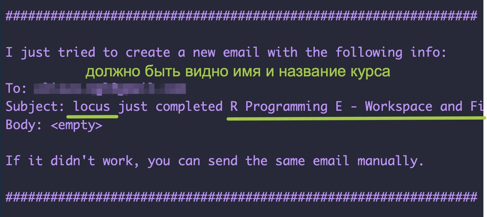

Тема 2 Начало работы с R
2.1 О чем этот курс
Название “компьютерный анализ текста” предполагает, что мы будем заниматься в основном анализом текстовых данных.
“Текст” в данном случае можно понимать как зафиксированную (в машиночитаемом виде) речь: от отзыва на товар до романа. Но в основном данные я подбираю таким образом, чтобы они были интересны гуманитариям.
А что интересно гуманитариям? О применимости количественных методов в гуманитаристике можно посмотреть видео: “Цифровые инструменты и методы: в чем их польза и как им обучить гуманитария?” (НИУ ВШЭ, 2023 г.).
Курс включает в себя два основных блока и 16 уроков:
- общее введение в R (темы 1-8)
- text-mining (темы 9-16)
Часть 1. Общее введение в R
- Знакомство с R и RStudio. Начало работы. Объекты, функции, операторы.
- Визуализация данных: базовый R, lattice, ggplot2
- Трансформация данных. «Опрятные» данные с dplyr и tidyverse.
- Условия и циклы. Написание собственных функций. Итерации с purrr.
- Импорт данных. Импорт данных из XML.
- Воспроизводимые исследования. RMarkdown.
- Регулярные выражения: базовый R и stringr
- Веб-скрапинг.
Консолидация: промежуточный проект
Часть 2. Text Mining
- Токенизация. Морфологический и синтаксический анализ.
- Анализ эмоциональной тональности.
- Распределения слов и анализ частотности.
- Cкрытое распределение Дирихле (LDA).
- Латентно-семантический анализ.
- Кластеризация и метод главных компонент.
- Построение сетей в R.
- Описание и анализ сетей.
Консолидация: итоговый проект
Мы не будем:
- анализировать звучащую речь (хотя это тоже можно делать в R);
- распознавать рукописные символы, для этого есть гораздо другие мощные инструменты;
- изучать машинное обучение и нейронные сети;
- разрабатывать приложения.
2.2 Что такое R?
R — это язык программирования для статистической обработки данных и работы с графикой. Он создан в 90-х гг. на факультете статистики Оклендского университета. Иными словами, его делали статистики и для статистиков. Поэтому он прекрасно подходит для анализа данных, статистических вычислений и машинного обучения, а значит востребован в науке.
Язык R — один из самых распространённых в научной среде. Им пользуются математики, биологи, генетики и другие учёные, которым нужно проводить статистические исследования и строить модели. Поэтому язык R нужно изучать тем, кто планирует заниматься научными исследованиями.
— Яндекс Практикум Блог
После установки R вы получите доступ к уже готовым методам статистического анализа и инструментам для визуализации. Но за счет того, что R распространяется свободно, постоянно появляются новые алгоритмы, созданные внутри экспертного сообщества и тоже доступные для всех. Как и любой язык, R растет и развивается.
2.3 Пакеты и виньетки
Если в базовой инсталляции R нет нужного решения – имеет смысл поискать в библиотеке пакетов. Пакет – это набор функций и иногда датасетов, созданный пользователями. На 1 июля 2023 г. в репозитории CRAN доступно 19789 пакетов. И это далеко не все: многие пакеты доступны только на GitHub, например пакет Dracor, к которому я буду обращаться в рамках этого курса.
Некоторые функции, которые вы найдете в пакетах, частично дублируют друг друга – это нормально, как и в естественном языке, “сказать” что-то можно разными способами.
Несмотря на то, что R создавался изначально для работы со статистикой, система свободно распространяемых модулей значительно расширяет круг задач, которые можно решать на этом языке. Например, благодаря модулю Shiny можно создавать приложения и встраивать их в веб-страницы, а модуль Leaflet позволяет создавать интерактивные карты. Одну из них мы сделали в рамках проекта Antibarbari HSE.
По технической документации и так называемым “виньеткам” можно понять, какой пакет вам нужен. Например, вот так выглядит виньетка пакета RPerseus, при помощи которого можно получить доступ к корпусу греческой и латинской литературы.
Бывают еще “пакеты пакетов”, то есть очень большие семейства функций, своего рода “диалекты” R. Таково, например, семейство tidyverse, объединяемое идеологией “опрятных” данных. Про него мы еще будем говорить.
А если не хватает пакетов? Это самое интересное. Если вы работаете в программе с графическим интерфейсом (SPSS, Minitab), то вы вынуждены формулировать свою задачу так, чтобы “вписаться” в набор кнопок, предусмотренных разработчиком. В R, столкнувшись с особой задачей, вы просто пишете под нее особую функцию.
Новую функцию не обязательно публиковать в составе пакета – можно сохранить в рабочую директорию (с расширением .R) и наслаждаться самому. По мере того, как развиваются ваши навыки программирования, вы можете ставить и решать все более сложные и интересные задачи.
2.4 О воспроизводимости
Когда вы решите опубликовать свое исследование, то и код к нему придется опубликовать (как правило, для этого используется GitHub) – поэтому надо сразу привыкать кодить так, чтобы ваш код был понятен другим. Например, добавлять пояснения при помощи знака # (как в Python)
# случайный набор чисел из нормального распределения
x <- rnorm(1000)
# случайная выборка из этого набора
y <- sample(x, 100)В идеале, впрочем, вы поясняете не то, что код делает (при грамотном кодинге это должно быть самоочевидо), а зачем.
В этом примере код, правда, настолько простой, что не требует особых пояснений. Но в больших проектах от “читабельности” кода зависит не только то, поймет ли вас потенциальный рецензент, но и сможете ли вы сами вспомнить, какая строчка за что отвечает. Также это позволит вернуться к проекту через некоторое время и быстро вспомнить, что там происходит.
Если вы получите интересные результаты и решите их опубликовать, то выложить в открытый доступ придется не только код, но и данные (если они не защищены копирайтом или другими ограничениями). Таким образом рецензент или другие ученые, которые будут читать вашу статью, сможет перепроверить ваши выводы. Ученые так делают!
И это еще один довод в пользу того, чтобы научиться программировать, а не полагаться на ПО с графическим интерфейсом.
2.5 RStudio
Работать в R мы будем с использованием RStudio. Это свободная среда разработки (IDE) программного обеспечения с открытым исходным кодом для языка программирования R.
Наша задача в этом уроке – установить R и R Studio и убедиться, что все работает; научиться самостоятельно находить помощь, совершать несложные вычисления.
2.6 Установка
- Установить R
- Скачать R для Windows: https://cran.r-project.org/bin/windows/
- Скачать R для Mac: https://cran.r-project.org/bin/macosx/
- Скачать R для Linux: https://cran.r-project.org/bin/linux/
- Установить R Studio
- Скачать: https://www.rstudio.com/products/rstudio/download/ (достаточно бесплатной версии)
На MacOS для работы библиотеки Stylo также понадобится установить XQuartz: https://www.xquartz.org/
Можно пользоваться R в облаке: https://posit.cloud/ (нужна регистрация).
2.7 Начало работы
После установки и запуска RStudio вы увидите вот такие четыре панели (их названия подписаны на картинке):

Для начала попробуйте получить информацию о сессии, введя в консоли такую команду:
sessionInfo() – это функция. За названием функции всегда следуют круглые скобки, внутри которых могут находиться аргументы функции. О функциях можно думать как о глаголах (“сделай то-то!”). Аргументы – это что-то вроде дополнений и обстоятельств. (Кстати, в “диалекте” tidyverse есть функции-наречия, так что аналогия законная.) Аргументы могут быть обязательные и необязательные.
Чтобы узнать, каких аргументов требует функция, надо вызывать help: ?mean(). Также можно (и нужно) читать техническую документацию к пакетам.
Сколько аргументов функции mean() имеют значения по умолчанию?
Уточнить свою рабочую директорию (в которой R будет искать и сохранять файлы) можно при помощи функции getwd() без аргументов. Установить рабочую директорию можно при помощи функции setwd(), указав в качестве аргумента путь к рабочей директории на вашем компьютере (в кавычках, так как это символьный вектор). В моем случае это выглядит так:
Также для выбора рабочей директории можно использовать меню R Session > Set Working Directory.
Пакеты для работы устанавливаются один раз, однако подключать их надо во время каждой сессии. Чтобы установить новый пакет, можно воспользоваться меню Tools > Install Packages. Также можно устанавливать пакеты из консоли. Установим пакет с интерактивными уроками программирования на языке R:
Для подключения используем функцию library(), которой передаем в качестве аргумента название пакета без кавычек:
В R можно создавать проекты, и это очень удобно1.
А теперь – первое задание на кодинг. После выполнения swirl предложит отправить e-mail преподавателю; ответьте Yes и сделайте скриншот сообщения об отправке. Если задание оценивается, укажите имя так, чтобы вас можно было узнать. Вот пример:

Установите курс программирования на R: install_course("R Programming E"). После этого привяжите пакет командой library(swirl) и выполните следующую команду: swirl(). Укажите ваше имя. Пройдите урок 2 Workspace and Files.
После выполнения ответьте на несколько вопросов на закрепление материала.
Какие действия в рабочей директории можно совершать из консоли?
Чтобы создать вложенную директорию при помощи функции dir.create(), аргументу recursive следует задать значение…
Если все получилось, двигаемся дальше.
2.8 R как калькулятор
Можно использовать R как калькулятор. Для этого вводим данные рядом с символом приглашения >, который называется prompt.
## [1] 2## [1] 8## [1] 2Если в начале консольной строки стоит +, значит предыдущий код не завершен. Например, вы забыли закрыть скобку функции. Ее можно дописать на следующей строке. Попробуйте набрать sqrt(2 в консоли.
2.9 Операторы присваивания
Чтобы в окружении появился новый объект, надо присвоить результат вычислений какой-нибудь переменной при помощи оператора присваивания <- (Alt + - (Windows) или Option + - (Mac)). Знак = также работает как оператор присваивания, но не во всех контекстах, поэтому им лучше не пользоваться.
## [1] 0.2Имя переменной, как и имя функции, может содержать прописные и строчные буквы, точку и знак подчеркивания. Функция c() позволяет собрать несколько элементов в единый вектор:
## [1] 5В диалекте tidyverse предпочтение отдается подчеркиванию, а не точке; здесь сказывается влияние синтаксиса Python, где через точку получают доступ к методам объекта. Будьте внимательны: R чувствительна к регистру!
Объекты, предназначенные для хранения данных, – это отдельные переменные, векторы, матрицы и массивы, списки, факторы, таблицы данных. Функции – это поименованные программы, предназначенные для создания новых объектов или выполнения определенных действий над ними (С. Мастицкий и В. Шитиков 2015, 24)
Как вы уже знаете из урока в swirl, список всех объектов в окружении возвращает функция ls(). Удалять объекты можно при помощи rm(). Функции можно вкладывать друг в друга:
Снова запустите swirl(). Укажите ваше имя. Пройдите урок 1 Basic Building Blocks.
Если все получилось, можно двигаться дальше! Но сначала зафиксируем несколько новых функций из этих первого урока.
Что вычисляет функция abs()?
Сколько значений вернет функция, если разделить c(2, 4, 6) на 2?
Буква “c” в названии функции c() означает…
2.10 Векторы
В языке R нет скаляров (отдельных чисел). Числа считаются векторами из одного элемента.
## [1] "numeric"## [1] 1Основные типы данных, с которыми мы будем работать, следующие:
- целое число (integer)
- число с плавающей точкой (numeric, также называются double, то есть число двойной точности)
- строка (character)
- логическая переменная (logical)
- категориальная переменная, или фактор (factor)
## [1] "numeric"## [1] FALSE## [1] TRUEДля начала мы научимся генерировать векторы. Например, так.
## [1] 1.0 1.5 2.0 2.5 3.0 3.5 4.0 4.5 5.0## [1] "foo" "foo" "foo" "foo" "foo"Запустите swirl() и пройдите урок 3 Sequences of Numbers.
Проверьте свои знания, прежде чем двигаться дальше.
Какие числа вернет команда pi:10?
Какие функции могут использоваться для создания символьных векторов?
Сколько значений вернет команда rep(c(0, 1, 2), times = 10)? Посчитайте в уме, не выполняя код.
Факторы внешне похожи на строки, но в отличие от них хранят информацию об уровнях категориальных переменных. Уровень может обозначаться как числом (например, 1 и 0), так и строкой.
## [1] A B C
## Levels: A B CПри попытке объединить в единый вектор данные разных типов, они будут принудительно приведены к одному типу:
## [1] 1 1 3 0## [1] "1" "a" "2" "лукоморье"
Логические векторы можно получить в результате применения логических операторов (== “равно”, != “не равно”, <= “меньше или равно”) к данным других типов:
x <- c(1:10) # числа от 1 до 10
y <- x > 5
y # значения TRUE соответствуют единице, поэтому их можно складывать## [1] FALSE FALSE FALSE FALSE FALSE TRUE TRUE TRUE TRUE TRUE## [1] 5Здесь можно запустить swirl() и пройти урок 8 Logic. Это не обязательно, но очень полезно, если хотите разобраться в операторах!
upd: В середине урока возможна ошибка, т.к. в версиях R 4.3.0 и выше было решено отказаться от двойного амперсанда (&&).
Попробуйте посчитать в уме: какое из выражений ниже вернет значение TRUE?
Функции all() и any() также возвращают логические значения:
## [1] TRUE## [1] TRUEЗапустите swirl() и пройдите урок 4 Vectors. Это позволит больше узнать про логические и символьные векторы.
Несколько вопросов для самопроверки.
Какие значение вернет команда (3 > 5) & (4 == 4)?
Какие значения вернет команда (TRUE == TRUE) | (TRUE == FALSE)?
Команда paste(LETTERS, 1:4, sep = "-") вернет…
Над векторами можно совершать арифметические операции, но будьте внимательны, применяя операции к векторам разной длины: в этом случае более короткий вектор будет переработан, то есть повторен до тех пор, пока его длина не сравняется с длиной вектора большей длины.
## [1] 5 10 15## [1] 12 22 32## [1] 15 26 37Векторы можно индексировать, то есть забирать из них какие-то элементы:
## [1] 2.5 3.0Запустите swirl() и пройдите урок 6 Subsetting Vectors.
Проверьте, все ли вы поняли из этого урока.
Если вектор x содержит числовые значения и некоторое количество NA, то что вернет команда x[is.na(x)]?
Что надо изменить в этом коде, чтобы получить все, кроме NA?
Дан именованный вектор: vect <- c(foo = 11, bar = 2, norf = NA). Как можно выбрать второй элемент?
2.11 Отсутствующие значения
NULL означает, что значение не существует. Например, если мы создадим пустой вектор, то при попытке распечатать его получим NULL. А вот длина пустого вектора равна нулю!
## NULL## [1] 0NA (not available) указывает на то, что значение существует, но оно неизвестно. Любые операции с NA приводят к появлению новых NA! Сравните:
## [1] NA## [1] 1.5Как проверить, есть ли в данных NA или NULL? Знак ==, который вы встречали в уроке swirl, здесь не подойдет.
## [1] NA## logical(0)Для этого есть специальные функции.
## [1] TRUE## [1] TRUEWhen some people first get to R, they spend a lot of time trying to get rid of NAs. People probably did the same sort of thing when zero was invented. NA is a wonderful thing to have available to you. It is seldom pleasant when your data have missing values, but life if much better with NA than without.
Burns (2012)
Как избавиться от NA? В некоторых случаях достаточно аргумента функции.
## [1] 1.5Чуть более сложные способы вы узнаете из урока swirl ниже.
Запустите swirl() и пройдите урок 5 Missing Values.
Готово? Тогда попробуйте ответить на вопрос ниже, не выполняя вычислений в R.
Дан вектор x <- c(44, NA, 5, NA). Сколько NA вернет команда x == NA?
2.12 Списки
Списки, или рекурсивные векторы (в отличие от атомарных векторов), могут хранить данные разных типов.
## $a
## [1] "a" "b" "c"
##
## $b
## [1] 1 2 3
##
## $c
## [1] TRUE FALSE TRUEМожно получить доступ как к элементам списка целиком, так и к их содержимому.
## [1] "a" "b" "c"## $b
## [1] 1 2 3## [1] "list"## [1] 1 2 3## [1] "numeric"## [1] TRUEОбратите внимание, что list[2] и list[[2]] возвращают объекты разных классов. Нам это еще понадобится при работе с XML.

Установите библиотеку rcorpora и загрузите список с названиями хлеба и сладкой выпечки.
library(rcorpora)
my_list <- corpora("foods/breads_and_pastries")Узнайте длину my_list и введите ее в поле ниже.
Достаньте из my_list элемент pastries и узнайте его длину.
А теперь извлеките пятый элемент из pastries и введите ниже его название.
Со списками покончено. Теперь можно пойти выпить кофе с my_list$pastries[13].
2.13 Матрицы

Матрица – это вектор, который имеет два дополнительных атрибута: количество строк и количество столбцов. Из этого следует, что матрица, как и вектор, может хранить данные одного типа. Проверим.
## [,1] [,2]
## [1,] 1 3
## [2,] 2 4## [,1] [,2]
## [1,] "1" "3"
## [2,] "2" "a"В матрице есть ряды и столбцы. Их количество определяет размер (порядок) матрицы. Выше мы создали матрицу 2 x 2. Элементы матрицы, как и элементы вектора, можно извлекать по индексу. Сначала указывается номер ряда (строки), потом номер столбца.
## [1] 1 3## [1] 3 4## [1] 1Обратите внимание, как меняется размерность при индексировании.
## [1] "matrix" "array"## [1] 2 2## [1] "numeric"## NULLПопытка узнать измерения вектора возвращает NULL, потому что с точки зрения R векторы не являются матрицами из одного столбца или одной строки, и потому не имеют измерений. С другой стороны, можно создать матрицу, в которой будет одна строка или один столбцец. При выводе они выглядят не так, как обычные векторы. Хотя казалось бы.
## [,1] [,2] [,3]
## [1,] 1 2 3## [,1]
## [1,] 1
## [2,] 2
## [3,] 3Над числовыми матрицами в R можно совершать разные операции из линейной алгебры (А. Буховец и П. Москалев 2015); многие из них нам понадобятся, когда мы будем говорить о латентно-семантическом анализе. Ниже несколько полезных функций (но пока их можно пропустить).
# в квадратной матрице есть главная и побочная диагонали
M = matrix(c(1, 2, 3, 4), nrow = 2) # ее мы распечатывали выше
diag(M)## [1] 1 4## [,1] [,2]
## [1,] 1 2
## [2,] 3 4## [,1] [,2]
## [1,] 3 9
## [2,] 6 12## [,1] [,2]
## [1,] 2 6
## [2,] 4 8Если хотите, можете посмотреть видео. Упражнений на матрицы пока не будет! (Они настигнут вас позже.)
2.14 Таблицы
Таблицы (кадры данных, data frames) – это двумерные объекты (как и матрицы). Датафреймы отличаются от матриц тем, что их столбцы могут хранить данные разного типа.
Если списки являются разнородными аналогами векторов в одном измерении, кадры данных являются разнородными аналогами матриц для двумерных данных (Мэтлофф 2019, 134).
## names age
## 1 A 10
## 2 B 11## [1] "A" "B"## [1] "A" "B"## names age
## 1 A 10Потренируемся на датасете с данными о гапаксах2 в диалогах Платона. Датасет можно скачать по ссылке. Файл имеет расширение .Rdata; щелкнув на него правой кнопкой мыши, можете открыть его сразу в RStudio и потренироваться.
Этот датасет позволяет перепроверить выводы Льюиса Кэмпбелла, профессора Сент-Эндрюсского университета в Шотландии. Еще 1867 г., впервые применив количественный метод для датировки диалогов Платона, он пришел к выводу, что для “позднего” стиля Платона, среди прочего, характерно обилие редкой лексики (Campbell 1867, xxxi).
В корпус подлинных диалогов Кэмпбелл включал 26 текстов, которые делил на три хронологические группы. Свои вычисления он делал вручную, а мы можем попробовать все пересчитать в R.
## dialogue words hapax ratio group
## 1 Apology 8745 36 0.004 1
## 2 Charmides 8311 31 0.004 1
## 3 Cratylus 17944 122 0.007 1
## 4 Critias 4950 104 0.021 3
## 5 Crito 4169 19 0.005 1
## 6 Euthydemus 12453 87 0.007 1Вот так выглядят наши данные. Функция class() позволяет убедиться, что это датафрейм.
## [1] "data.frame"Потренируемся работать с данными в таблицах.
## [1] "dialogue" "words" "hapax" "ratio" "group"## dialogue words hapax ratio group
## 16 Parmenides 15155 20 0.001 2## 'data.frame': 26 obs. of 5 variables:
## $ dialogue: chr "Apology" "Charmides" "Cratylus" "Critias" ...
## $ words : chr "8745" "8311" "17944" "4950" ...
## $ hapax : chr "36" "31" "122" "104" ...
## $ ratio : chr "0.004" "0.004" "0.007" "0.021" ...
## $ group : num 1 1 1 3 1 1 1 1 1 1 ...# преобразовать тип данных в столбцах
hapax_plato$group <- as.factor(hapax_plato$group)
hapax_plato[,2:4] <- sapply(hapax_plato[,2:4],as.numeric) # подробнее о функции `sapply()` в уроке про итерации## dialogue words hapax ratio group
## 3 Cratylus 17944 122 0.007 1
## 6 Euthydemus 12453 87 0.007 1
## 8 Gorgias 26337 125 0.005 1
## 12 Laws 103193 914 0.009 3
## 16 Parmenides 15155 20 0.001 2
## 17 Phaedo 21825 140 0.006 1
## 18 Phaedrus 16645 228 0.014 2
## 19 Philebus 17668 64 0.004 3
## 20 Protagoras 17795 102 0.006 1
## 21 Republic 88878 668 0.008 2
## 22 Sophist 16024 107 0.007 3
## 23 Statesman 16953 180 0.011 3
## 24 Symposium 17461 127 0.007 1
## 25 Theaetetus 22489 162 0.007 2
## 26 Timaeus 23662 370 0.016 3И еще с датафреймами полезна функция summary():
## dialogue words hapax ratio group
## Length:26 Min. : 4024 Min. : 12.00 Min. :0.001000 1:16
## Class :character 1st Qu.: 7154 1st Qu.: 31.25 1st Qu.:0.004000 2: 4
## Mode :character Median : 15590 Median : 94.50 Median :0.007000 3: 6
## Mean : 19364 Mean :146.69 Mean :0.007154
## 3rd Qu.: 17907 3rd Qu.:136.75 3rd Qu.:0.008000
## Max. :103193 Max. :914.00 Max. :0.021000Последнее упражнение на кодинг в этой главе!
Запустите swirl() и пройдите урок 7 Matrices and Data Frames.
2.15 Практическое задание
Напоследок небольшое практическое задание. Код для его выполнения сохраните в виде файла с расширением .R. Его надо будет отправить преподавателю.
ПРАКТИЧЕСКОЕ ЗАДАНИЕ 1: ИСПАНСКИЕ ПИСАТЕЛИ
# устанавливаем и загружаем нужный пакет
install.packages("languageR")
library(languageR)
# загружаем датасет
meta <- spanishMeta
# допишите ваш код ниже
# посчитайте средний год публикации романов Камило Хосе Селы
# вычислите суммарное число слов в романах Эдуардо Мендосы
# извлеките ряды с текстами, опубликованными до 1980 г.Поздравляем! С этой главой вы справились. Дальше будет сложнее, но интереснее.

Литература
Гапакс – это слово, которое встречается один раз в корпусе или тексте.↩︎